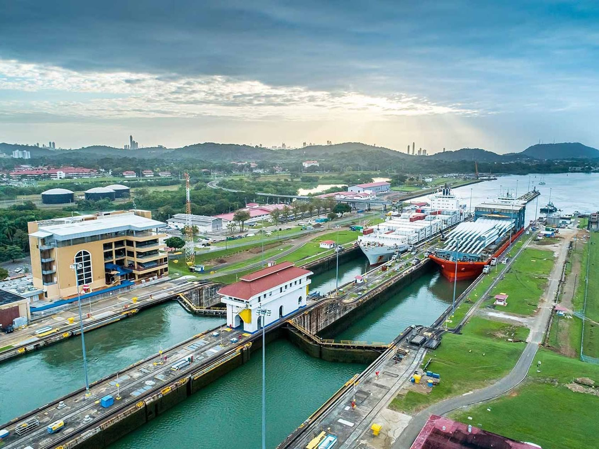
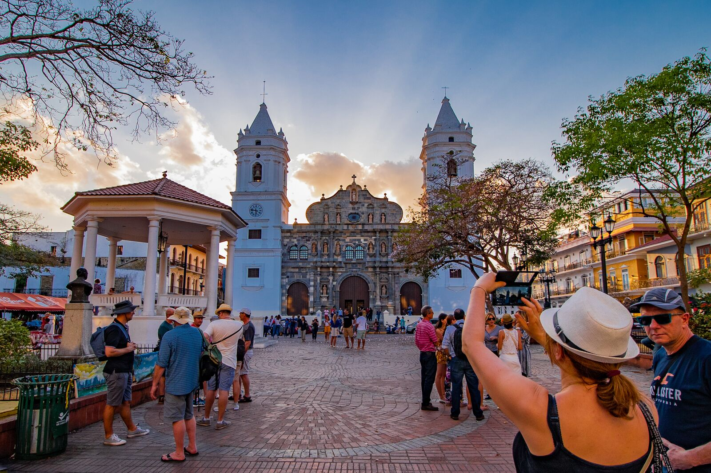
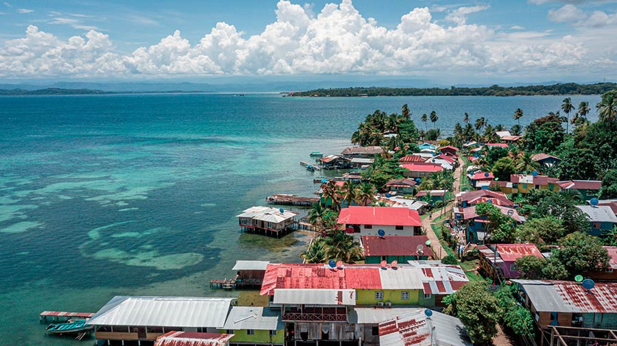

Canal de Panamá

El Canal de Panamá conecta el Atlántico con el Pacífico y es una de las grandes maravillas de la ingeniería moderna.
Casco Antiguo

Centro histórico de la Ciudad de Panamá y patrimonio de la humanidad.
Bocas del Toro

Archipiélago caribeño con playas e islas ideales para actividades acuáticas.
Boquete

Conocido por su café de altura, clima fresco y senderismo al volcán Barú.